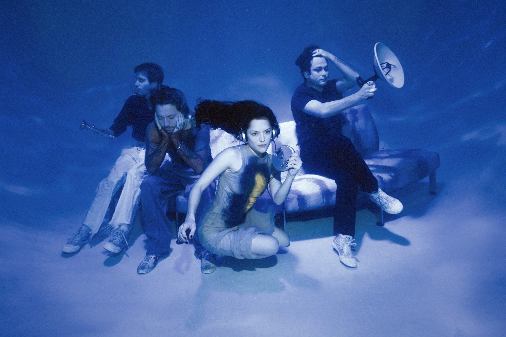
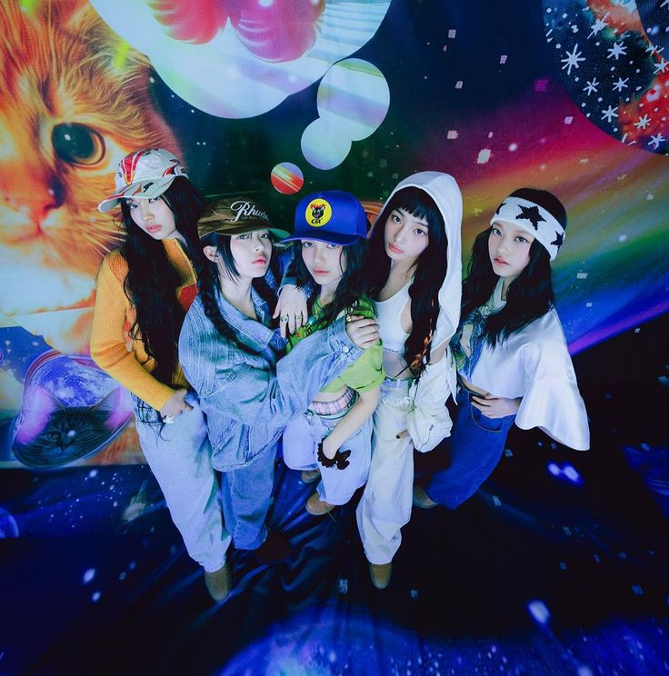

Favorite Artists!
Sabrina Carpenter
Sabrina Carpenter has become one of my favorite artists lately, and I find myself constantly replaying her songs because of how bold, confident, and expressive they are. What really stands out to me is how her music embraces and celebrates a woman's sexuality in a way that feels empowering rather than limiting. She isn't afraid to own her femininity or lean into her sex appeal, and that confidence comes through strongly in both her lyrics and overall style.
Her songs can be a bit controversial since they often include suggestive or openly sexual themes, but I see that as part of her artistic freedom and honesty. Instead of holding back, she chooses to express herself unapologetically, which makes her music feel more real and relatable to listeners who appreciate that kind of openness. At the same time, her tracks are incredibly catchy, with melodies and hooks that stay in your head long after listening. That combination of bold messaging and addictive sound is what keeps me coming back to her music again and again.

The Marias
The Marías have always been one of my favorite artists because of how deeply their dreamy pop sound resonates with me emotionally. Their music has this soft, almost hypnotic quality that makes it feel very personal and immersive, like you're being pulled into a calm and intimate atmosphere every time you listen. Most of their songs lean more toward ballads, which adds to that emotional depth. There's a certain vulnerability in their sound that makes it easy to connect with, especially during quiet or reflective moments.

Will Wood
Will Wood is one of those artists whose music instantly stands out to me because of its mischievous and upbeat energy. His songs have this quirky, almost chaotic charm that makes them incredibly fun and unpredictable to listen to. There's always something going on whether it's the playful lyrics, theatrical delivery, or sudden changes in sound that keeps each track interesting from start to finish. What I really enjoy is how his music feels both funky and expressive at the same time. The rhythms are lively, the melodies are catchy, and there's a sense of personality in every song that makes it feel unique. It's the kind of music that doesn't take itself too seriously, yet still manages to leave a strong impression. Whenever I listen to his songs, they instantly boost my mood and make the whole experience feel more energetic and entertaining.

New Jeans
NewJeans has quickly become one of my favorite groups because of how unique and refreshing their music feels. Their sound leans into a soft, dreamy mix of pop and R&B, often inspired by late '90s and early 2000s vibes, which gives their songs a nostalgic yet modern feel . Unlike louder or more intense K-pop styles, their music feels more relaxed and natural, which makes it easy to listen to anytime. What I really like about them is how emotionally comforting their songs are. There's something very gentle and almost effortless in the way they present their music it doesn't feel forced or overly dramatic, but instead calm and sincere. Their tracks often explore themes like young love, emotions, and everyday experiences, which makes them feel relatable and easy to connect with.